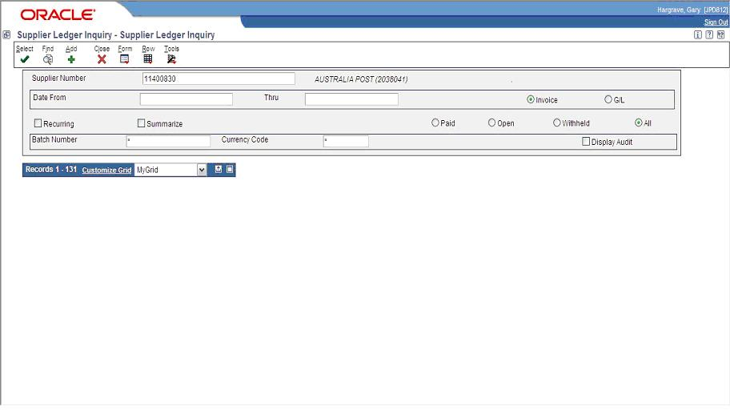

Grid Disappears When Using "Go To End" on Web Client
Purpose of Document
Clicking the 'Go to End' button in a Find/Browse form collapses the grid on the Web client. What could be the possible cause of this issue?

The issue persists after removing User Overrides (P98950/F98950).
The same issue occurs through the Data Browser for the same Table or same Business View.
Page Down does not collapse the grid.
The most common cause of this issue is with data that has been converted or interfaced by a third party software and certain columns of data within the table contain special characters in the data such as the following characters:
Five white space characters:
Space (' ' )
Horizontal tab ('\t')
Form feed ('\f')
Vertical tab ('\v')
New-line character ('\n')
And control characters:
New-line character (represented by '\n' in the source file),
Alert (bell) tone ('\a' )
Backspace ('\b' )
Carriage return ('\r' )
Null character ('\0' )
The most commonly seen characters that cause this issue are the tab and new-line characters.
The issue can be debugged using the following steps:
Create User Grid Format
Remove String Columns one by one (then click Go to End button)
Repeat this action until selecting the Go to End button does not collapse the grid.
Once you have identified the column with the special character, remove it by issuing SQL (possibly, update) statement.
Once the special character is removed from the data, then the Go To End option will work successfully without collapsing the grid.
Note:
Special characters cannot be observed through the Universal Table Browser (UTB) or Export to Excel.
In case you need to debug based on raw data through database tools, this can be performed as below,
Export data into text file (not *.csv)
Copy text output file into excel spreadsheet
Check whether all the alignment is correct and proper
Special character can be determined by text to ASCII converter
Convert string (with special character) to ASCII
Through ASCII table determine the special character
Other case studies on Grid Collapse:
Refer to below document which is specific to tools release you are on:-
<Document 1552879.1> E1: JAS: Grid in P51006 Fails to Render in Tools Release 9.1.3.1 (when you active Dropdown Feature)
<Document 1523831.1> E1: LANG: Grid Collapses in Form W4314B (Receipt To Match) for Language CT (Chinese Traditional)